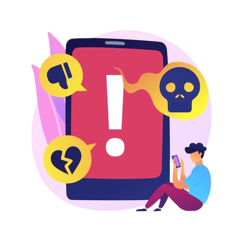

O ódio nas mídias sociais se tornou uma ocorrência muito comum em nosso mundo digital. É uma triste realidade que muitos indivíduos usam o anonimato e a distância da internet para espalhar comentários e mensagens de ódio, muitas vezes direcionados a indivíduos ou grupos dos quais eles discordam ou não gostam.O impacto desse ódio pode ser devastador. Pode causar danos emocionais àqueles que são visados, levando a sentimentos de medo, ansiedade e depressão. Também pode perpetuar um ciclo de ódio e divisão, levando a uma maior polarização e conflito na sociedade.
O que é particularmente preocupante sobre o ódio nas mídias sociais é a facilidade com que ele pode se espalhar. Uma mensagem odiosa pode ser compartilhada e amplificada em segundos, alcançando um vasto público e potencialmente influenciando as opiniões e atitudes de outras pessoas. Isso pode alimentar ainda mais a propagação do ódio e criar uma câmara de eco onde os indivíduos apenas ouvem e se envolvem com pontos de vista que se alinham com os seus.
Para combater o ódio nas redes sociais, é importante que as pessoas estejam atentas às suas próprias palavras e ações online. Todos nós temos a responsabilidade de usar a mídia social de maneira construtiva e positiva e de denunciar comportamentos odiosos quando os vemos. As empresas de mídia social também podem desempenhar um papel no combate ao ódio, implementando políticas e sistemas para sinalizar e remover conteúdo odioso de suas plataformas.
No final, o ódio nas mídias sociais é um reflexo de questões sociais mais profundas, como intolerância, ignorância e medo. Ao trabalharmos juntos para abordar essas questões subjacentes e promover a compreensão e a empatia, podemos criar um mundo digital mais seguro e inclusivo para todos.